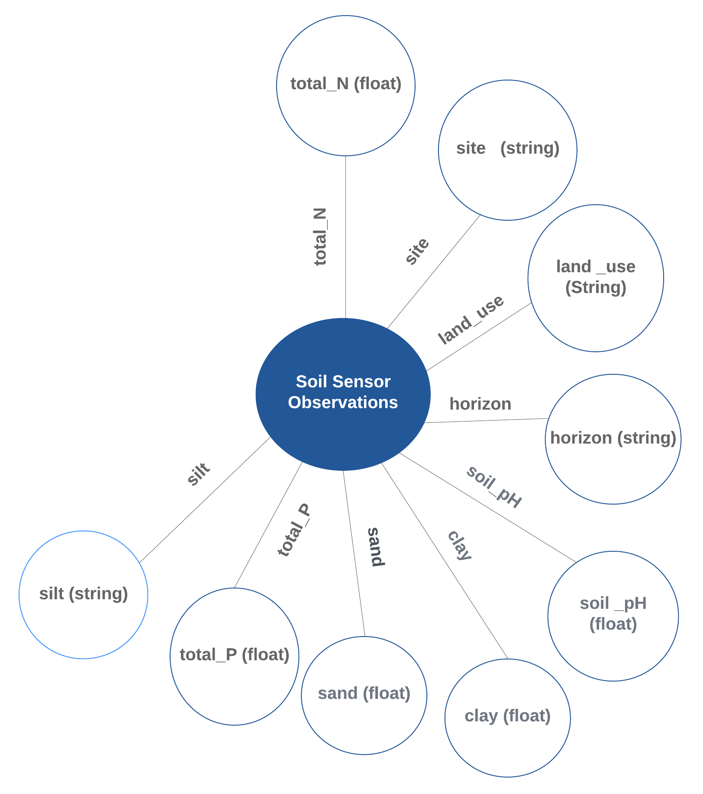

Soil Sensor Data
Soil Sensor Data#
The data consist of soil characteristics and nutrients for tropical forests in Sabah, Malaysia, both unlogged and logged. Soil properties (ID, Site, LandUse, PlotName, Subplot, Horizon, pH, TotalC, TotalN, TotalP, inorganicP, C-N, Sand, Silt, Clay) extracted from buried ion exchange membranes and soil nutrients (Identifier, Site, LandUse, PlotName, Subplot, NO3N, NH4N, TotalN, Ca, Mg, K, P, Fe, Mn Cu, Zn, B This data is a contribution from the BALI collaboration, which is financed by the UK’s Natural Environment Research Council (NERC). Modelled datasets in this study can be found at (https://github.com/Naeima/Forest-Observatory-Ontology/releases/tag/Soil-Data-v1.0.0).

!pip install rdflib
from google.colab import files
import pandas as pd
import csv
from rdflib import Graph, Namespace, URIRef, Literal
from rdflib.namespace import RDF, XSD
# Prompt for file upload
uploaded = files.upload()
# Read the uploaded CSV file into a pandas DataFrame
for filename in uploaded.keys():
print('User uploaded file "{name}" with length {length} bytes'.format(
name=filename, length=len(uploaded[filename])))
df = pd.read_csv(filename)
# Define namespaces
FOO = Namespace("https://w3id.org/def/foo#")
SOSA = Namespace("http://www.w3.org/ns/sosa/")
GEO = Namespace("http://www.w3.org/2003/01/geo/wgs84_pos#")
# Create a new graph
g = Graph()
# Bind namespaces
g.bind("foo", FOO)
g.bind("sosa", SOSA)
g.bind("geo", GEO)
# Path to your CSV file
csv_file_path = "Soil.csv" # Adjust the path accordingly
# Read and process data
with open(csv_file_path, newline='') as csvfile:
reader = csv.DictReader(csvfile, delimiter=',')
# Print headers for debugging
print("Headers:", reader.fieldnames)
for row in reader:
identifier = row.get('Identifier', '').strip()
site = row.get('Site', '').strip()
land_use = row.get('Land_Use', '').strip()
plot_name = row.get('Plot_Name', '').strip()
subplot = row.get('Subplot', '').strip()
horizon = row.get('Horizon', '').strip()
soil_ph = row.get('Soil_pH', '').strip()
total_c = row.get('Total_C', '').strip()
total_n = row.get('Total_N', '').strip()
total_p = row.get('Total_P', '').strip()
inorganic_p = row.get('inorganic_P', '').strip()
cn_ratio = row.get('C:N', '').strip()
sand = row.get('Sand', '').strip()
silt = row.get('Silt', '').strip()
clay = row.get('Clay', '').strip()
# Create observation URI
observation = URIRef(f"https://w3id.org/def/foo#{identifier}")
g.add((observation, RDF.type, FOO.soilObservation))
g.add((observation, FOO.id, Literal(identifier, datatype=XSD.string)))
g.add((observation, FOO.site, Literal(site, datatype=XSD.string)))
g.add((observation, FOO.landUse, Literal(land_use, datatype=XSD.string)))
g.add((observation, FOO.plotName, Literal(plot_name, datatype=XSD.string)))
g.add((observation, FOO.subplot, Literal(subplot, datatype=XSD.string)))
g.add((observation, FOO.horizon, Literal(horizon, datatype=XSD.string)))
g.add((observation, FOO.madeBySensor, FOO.soilSensor)) # Link sensor to observation
# Add observable properties
if soil_ph:
g.add((observation, FOO.soilPH, Literal(soil_ph, datatype=XSD.double)))
if total_c:
g.add((observation, FOO.totalC, Literal(total_c, datatype=XSD.double)))
if total_n:
g.add((observation, FOO.totalN, Literal(total_n, datatype=XSD.double)))
if total_p:
g.add((observation, FOO.totalP, Literal(total_p, datatype=XSD.double)))
if inorganic_p:
g.add((observation, FOO.inorganicP, Literal(inorganic_p, datatype=XSD.double)))
if cn_ratio:
g.add((observation, FOO.cNRatio, Literal(cn_ratio, datatype=XSD.double)))
if sand:
g.add((observation, FOO.sand, Literal(sand, datatype=XSD.double)))
if silt:
g.add((observation, FOO.silt, Literal(silt, datatype=XSD.double)))
if clay:
g.add((observation, FOO.clay, Literal(clay, datatype=XSD.double)))
# Serialize the graph to a file
output_file = "soil_knowledge_graph.ttl"
g.serialize(destination=output_file, format="turtle")
print(f"Knowledge graph has been serialized to {output_file}")
```python
# adding serialized data to stardog
# conn_details = {
# 'endpoint': 'http://localhost:5820',
# 'username': 'admin',
# 'password': 'admin'
# }
# with stardog.Admin(**conn_details) as admin:
# Soil = admin.new_database('Soil')
# conn = stardog.Connection('Soil', **conn_details)
# conn.begin()
# conn.add(
# stardog.content.File('Soil.rdf', stardog.content_types.TURTLE),
# )
# conn.commit()